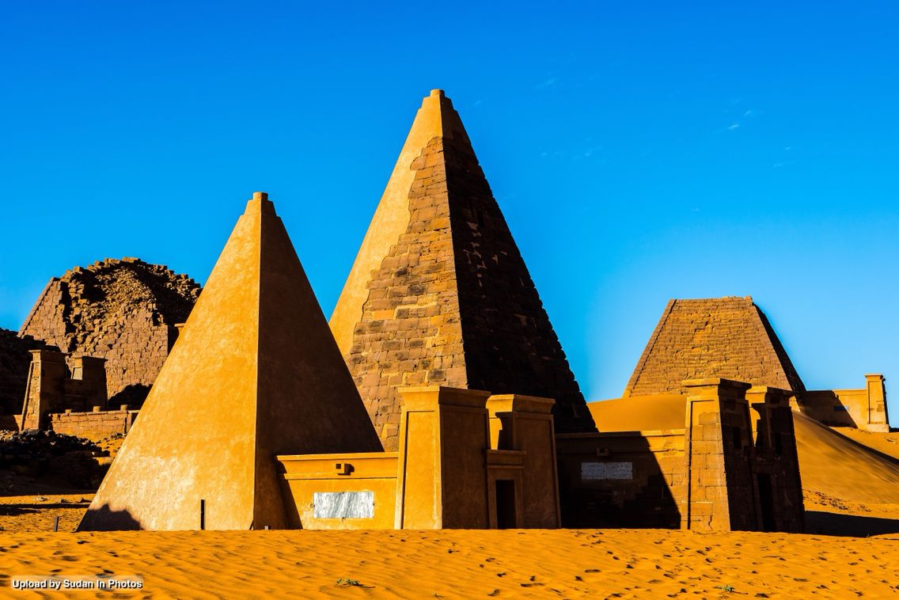
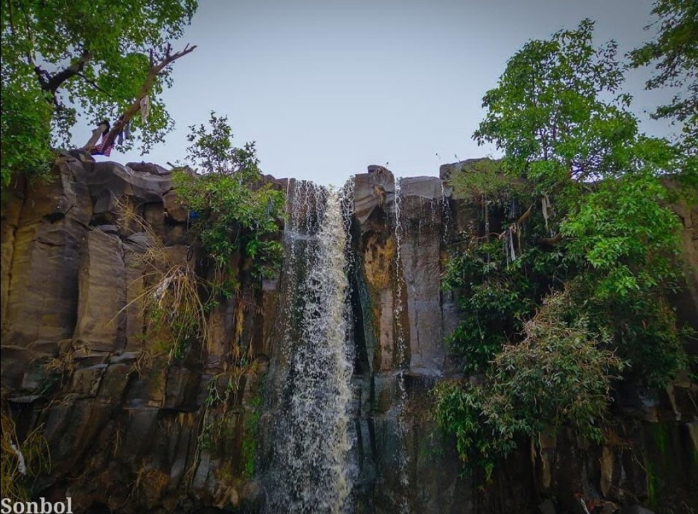
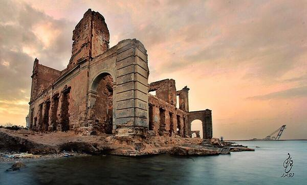
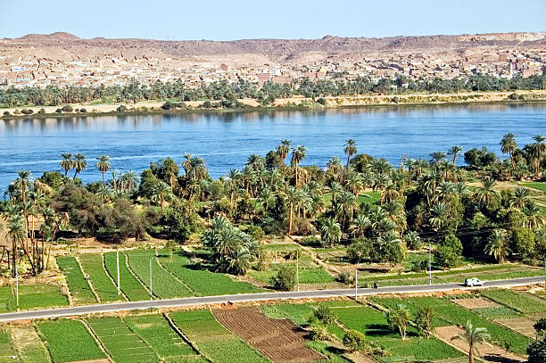
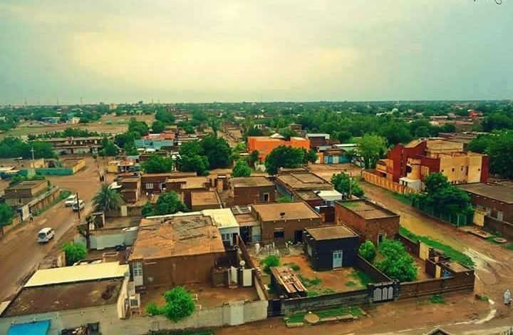

الوجهات السياحية في السودان
استكشف أجمل المناطق التاريخية والطبيعية في السودان، من الأهرامات القديمة إلى الجبال الخلابة.
أهرامات البجراوية
أين تقع منطقة البجراوية؟ تقع منطقة البجراوية في جهة الجنوب من مدينة شندي من دولة السودان، إذ تقع بالتحديد على بعد 218 كم عن مروي الواقعة في شمال العاصمة السودانية الخرطوم، وتبعد عن الخرطوم نفسها ما يقارب 300 كم أين تقع أهرامات البجراوية؟ تقع في الشرق من دولة السودان وذلك على ضفاف نهر النيل كم عدد أهرامات البجراوية في السودان؟ تحتوي المنطقة على ما يقارب 200 هرم والعديد منها مستخدمة كقبور، وتعود أغلب هذه القبور إلى ملوك وملكات المملكة المروية، والتي كانت تحكم تلك المنطقة لأكثر من 900 عام تقريب ما هي صفات أهرامات البجراوية؟ الصفات التالية:[٢][٣] تعتبر الأهرامات أصغر إلى حد ما من الأهرامات المصرية الشهيرة. تأتي هذه الأهرامات على قاعدة ضيقة نوعاً ما إضافة إلى زاوية شديدة الانحدار والتي تأتي على جوانب الهرم. يعود تاريخ بناء هذه الأهرامات قبل ما يقارب 2700 – 2300 عام تقريباً، وبقيت تبنى في السودان إلى أواخر عام 300 بعد الميلاد تقريباً. تحتوي الأهرامات على رسوم وزخرفة تعود للثقافة الفرعونية إلى جانب اليونان وروما. ما هي أجزاء أهرامات البجراوية؟ تنقسم الأهرامات إلى قسمين وهما: الجزء الأول: وهو القسم العلوي والذي يتكون من هرم إلى جانب غرفة ملحقة به، وتأتي في الجانب الشرقي. الجزء الثاني: وهو عبارة عن القسم السفلي والذي يتم النزول إليه عن طريق درج يصل إلى غرفتين أو 3 غرف تم استخدامها كمقابر، أما الغرفة الملحقة بالهرم تأتي مزينة بعدد جميل من الرسومات المختلفة إلى جانب نقوش تبين، وتوضح كل من الجوانب الدينية والسياسية والاقتصادية بالإضافة إلى الأمنية كما تبين بشكل واضح القوة التي يمتلكها الملك مع مكانته ومكانة الملكة والذي بُني الهرم كقبر لهما. ما هي أقسام أهرامات البجراوية؟ كما تحتوي المدينة على ثلاثة أقسام ملكية، والتي تضم أكثر من 200 هرم تقريباً، كما أن الأهرامات الجنوبية والأهرامات الغربية كانت تستخدم سابقاً منذ القرن الثامن قبل الميلاد تقريباً، ويعتبر هرم الملكة أماني شيختو والتي حكمت المنطقة في منتصف القرن الأول قبل الميلاد تقريباً من أهم المقابر في الأهرامات، وتأتي هذه الأهرامات على الشكل التالي:[١] الأهرامات الغربية: والتي تحتوي على أفراد عاديين نوعاً ما، إضافة إلى بعض الأفراد المنتمين إلى العائلة الملكية، وتضم أكثر من 500 قبر تقريباً. الأهرامات الجنوبية: تتميز هذه بالحركة السياحية الكبيرة فيها، إذ أنها تحتوي على ما يقارب 200 قبر وأكثرها للملوك وتعتبر الأقدم تاريخياً ثم تليها الأهرامات الشمالية. الأهرامات الشمالية: والتي تضم أيضاً مجموعة من قبور الملوك والملكات. السياحة إلى أهرامات البجراوية تعتبر هذه الأهرامات أحد أهم المعالم السياحية في السودان، إلا أن السياحة إليها قليلة إلى حد ما إذ تستقبل حالياً ما يقارب 15 ألف سائح سنويًا أو أقل.[٢] معالم سياحية أخرى في منطقة البجراوية تحتوي المنطقة على مدينة ملكية كوشية، وتأتي هذه المدينة مسورة بجدار سميك إلى حد ما، كما تحتوي هذه المدينة المسورة على عدد من الآثار ومنها: المعابد؛ إذ تحتوي المدينة على عدد من المعابد داخل المدينة إلى جانب بعض المعابد في خارجها، وهما نوعان من المعابد، المعبد الآموني إلى جانب المعبد المروي، وهما يعتبران من أهم المعالم في المدينة، وتصل مساحتهما ما يقارب 300 ألف متر مربع إلى 500 ألف متر مربع.[١]
جبل مرة
جبل مرة هي مجموعة قمم بركانية، ترتفع إلى 3،000 متر. تقع في ولاية وسط دارفور في إقليم دارفور في السودان تسكنها قبائل الفور. يعتبر المناخ فيها معتدل وتتوفر فيها مياه الأمطار والينابيع بصورة شبه دائمة. ويمتد مئات الاميال من مدينة كاس جنوباً إلى ضواحي الفاشر شمالاً ويغطي مساحة 12.800 كلم، ويعد ثاني أعلى قمة في السودان حيث يبلغ ارتفاعه 10.000 قدم فوق مستوى سطح البحر ، ويتكون من سلسلة من المرتفعات بطول 240 كلم وعرض 80 كلم، تتخللها الشلالات والبحيرات البركانية يتمتع جبل مرة بطقس معتدل يغلب عليه طابع مناخ البحر الأبيض المتوسط ، حيث تهطل الأمطار في كل فصول السنة تقريباً مما يتيح الفرصة لنمو الكثير من الأشجار مثل الموالح والتفاح والأشجار الغابية المتشابكة كما أن هذه الأمطار الغزيرة توفر إمداد مائي مستمر للأراضي الزراعية مما يجعل تربتها صالحة لزراعة الذرة والدخن والخ. يوجد بالجبل العديد من أنواع النباتات التي ينفرد بها دولياً بالإضافة إلى مجموعات كبيرة من الحيوانات النادرة والأليفة يتميز جبل مرة بأنه مأهول بالسكان ، وبالقرى الطبيعية الجميلة التي تنتشر حتى قمة الجبل ويعتبر منطقة جذبِِ سياحي للكثير من الزائرين للتمتع بالمناظر الطبيعية والمناخ المعتدل والبيئة النقية. تتميز المنطقة بنباتات وأشجار غير موجودة في بقية أنحاء السودان مثل التفاح والعنب والصنوبر، إضافة إلى أنواع نادرة من الزهور المنتشرة بين الصخور. وهناك بُعد تاريخي روحي ديني في جبل مرة ، إذ يقول الباحث في التاريخ القديم والتراث السوداني عباس أحمد الحاج، إن "نسختي سنة 1817 و1830 من التوراة، ذكر فيهما أن سيدنا هارون شقيق النبي موسى، عليه السلام، قد مات في جبل (حور) بالقرب من وادي هور، ما دفع بعض المؤرخين إلى الاعتقاد أن جبل مرة إنما هو (جبل الطور) المقدس، حيث نادى الله كليمه موسى وأظهر له آياته وأرسله إلى فرعون، المذكور في القرآن الكريم، إذ إن وادي هور المعروف والشهير، هو الذي ذلك الذي ينبع من مرتفعات دارفور ليصب في مجرى النيل".
مدينة سواكن
مدينة تقع في شمال شرق السودان، على الساحل الغربي للبحر الأحمر على ارتفاع 66 متر (216.6 قدم) فوق سطح البحر وتبعد عن العاصمة الخرطوم حوالي 642 كيلومتر (398.9 ميلاً) غرباً وعن مدينة بورتسودان 54 كيلومتر (33.5 ميلا)، وتضم منطقة أثرية تاريخية وكانت سابقاً ميناء السودان الرئيسي. وقد بُنيت المدينة القديمة فوق جزيرة مرجانية وتحولت منازلها الآن إلى آثار وأطلال. سبب التسمية سواكن لغة، هو لفظ أقرب إلى السكنى بمعنى الإقامة، سكن يسكن ساكن سواكن، أو بمعنى الهدوء السكون والسكينة، إلا أن هناك عدة افتراضات وروايات يتداولها الكتاب في معرفة معنى الاسم ومصدره وسبب تسمية المدينة به، ومنها ما ذهب إليه الكاتب المصري الشاطر البصيلي الذي ذكر بأن اللفظ سواكن من أصل مصري قديم وهو «شواخن» ويعني محطة - شوا. وشوا Shewa هو اسم لمملكة إسلامية بالحبشة في سنة 1285 م، وحسب رأيه فإن سبب تحول كلمة «شواخن» إلى شواكن أو سواكن، يعود إلى خلو لغات البجا من لفظ الخاء والذي غالباً ما يقلب إلى كاف أو هاء في بعض لهجاتها. أما الرأي الغالب فما أشارت إليه العديد من الدراسات أن إسمها اِشتق من عدة قصص إسطورية يرجع تاريخها إلى عصر الملك سليمان وبلقيس ملكة سبأ وهناك من يعتقد بأن الاسم عربي الأصل ومشتق من كلمة «السوق» ويستدل على ذلك بوصول بعض العناصر العربية التي هاجرت من شبه الجزيرة العربية من الضفة المقابلة لموقع سواكن على البحر الأحمر واستقراوا فيه واختلطوا بسكانه المحليين. وتطور الموقع بفضل خدمة التجارة وعرف باسم «سواقٍ» أو أسواق والذي حرف فيما بعد إلى سواكن، ويدعمون هذا الرأي بالاسم الذي يطلقه البجا على سواكن وهو (أوسوك) ومعناه باللغة البجاوية السوق. الموقع تقع سواكن على خط عرض 19,5 درجة شمال خط الاستواء وخط طول 37,5 درجة شرق. واشتهرت قديما وكانت تمر بها الرحلات بعد عبور الموانئ المجاورة له مثل ميناء القنفذة وميناء جدة وميناء الليث وميناء ينبع في السعودية وميناء القصير وميناء سفاجا في مصر. وكانت في الأصل جزيرة ثم توسعت إلى الساحل وما جاوره فغدت مدينة سواكن تضم الجزيرة والساحل. الطوبغرافيا بنيت سواكن فوق جزيرة مسطحة الأرض بيضاوية الشكل طولها حوالي 750 متر وعرضها أقل من 500 متر داخل شرم ضيق يفتح على البحر الأحمر ومتصل بالبر بطريق ممهد، ويتكون الساحل من بحيرات مستنقعات وشعاب مرجانية وسهول تحدها تلال من الداخل تغطيها أحراش متفرقة وخيران (أودية موسمية) وفي الخريف توفر الأمطار كميات من المياه. المناخ في الشتاء تهب رياح موسمية ينتج عنها نسيم بارد وأمطار ولكن في الصيف تتغير أحوال الطقس ويكون أقرب إلى جو المحيط الهندي الصيفي الحار المشبع بالرطوبة وتكون الرياح مصحوبة بعواصف ترابية تهب من الصحراء
النيل الأزرق
ولاية النيل الأزرق من ولايات السودان الجنوبية حسب تقسيم السودان بعد انفصال الجنوب في 2011. تجاورها من الشمال ولاية سنار ومن الشرق إثيوبيا ومن الغرب والجنوب دولة جنوب السودان. عاصمتها هي الدمازين. تم ترسيم الولاية في فبراير 1994. السكان يُقدَّر عدد سكان الولاية بحوالي نسمة 618,029 عام (1999). وينتمون إلى مختلف القبائل السودانية. التقسيم الإداري سد الروصيرص ولاية النيل الازق مُطلة على النيل الأزرق تنقسم الولاية إدارياً إلى 7 محليات هي: محلية الدمازين محلية الروصيرص محلية الكرمك محلية باو محلية قيسان محلية ود الماحي محليةالتضامن و رئاسة الوحدة الإدارية مدينة بوط، تتكون هذه المحلية من سبعة مدن هي اقدي، رورو، الجمام ،جريوة ،قُلي ،بُك ،بوط. ولاة الولاية فبراير 1994 إلى ديسمبر 1997 عبد الله أبو فاطة عبد الله ديسمبر 1997 إلى يناير 2000 عبد الرحمن أبو مدين يناير 2000 إلى فبراير 2001 الهادي بشارة فبراير 2001 إلى 2003 حسن حمدان سليمان (فترة أولى) مايو 2003 إلى 2004 عبد الله عثمان الحاج 2004 إلى 2005 حسن حمدان سليمان (فترة ثانية) سبتمبر 2005 إلى يوليو 2007 عبد الرحمن محمد أبو مدين يوليو 2007 إلى سبتمبر 2011 مالك عقار ايير سبتمبر 2011 الي أبريل 2013 يحي محمد خير (فترة أولى) أبريل 2013 الي مايو 2018 حسين يس حامد مايو 2018 إلى فبراير 2019 خالد حسين محمد عمر فبراير 2019 إلى ديسمبر 2020عبد الرحمن نورالدائم، بعد ثورة ديسمبر يناير 2021 إلى يوليو 2021 جمال عبدالهادي يوليو2021إلى يومنا هذا أحمد العمدة بادي
ولاية الجزيرة
ولاية الجزيرة هي إحدى ولايات السودان والتي تقع بين خطي طول 25 -32 و18 -34 شرق وعرض 29 -15 و36 -13 شمال. ولاية الجزيرة تتميز بموقعها الاستراتيجي في خارطة الوطن وتعد أكبر مصدر دخل للسودان (مشروع الجزيرة) أكبر مصدر غذائي واقتصادي في السودان. وتتميز بتوسطها للعديد من الولايات وتذخر بمواردها البشرية والطبيعية الهائلة وبنياتها التحتية وإرثها العظيم المتنوع في العديد من محاور البناء الوطني. ولاية الجزيرة عاصمتها ود مدني. أهم المدن: الحصاحيصا، المناقل، رفاعة، ودراوة، الكاملين، 24 القرشي، أم القرى، وود مدني حاضرة الولاية. المناخ الأمطار يتراوح المعدل بين 150-350ملم العام الأنهار (النيل الأزرق وروافده الرهد والدندر). قالب:المياةالجوفية : متوفرة في كل إنحاء الولاية. سطوع الشمس: 7,6-10,6 ساعة / اليوم. المتوسط السنوي لدرجة الحرارة 36.5 درجة مئوية. نسبة الرطوبة 70-180درجة مئوية وتنخفض في موسم الجفاف إلى 18-32 . مزارع سوداني في منطقة مشروع الجزيرة الزراعة الأراضي الصالحة للزراعة: 5.8 مليون فدان وهي تعادل 91.9 من جملة أراضي الولاية. المستثمر من الأراضي: 2.6 مليون فدان في القطاع المروي مليون فدان قطاع مطري 516 ألف فدان مشاريع نيلية واستثمارية. 424 ألف فدان مساحة الغابات 188 الف فدان المترات. تتميز الولاية بوجود أكبر مشروعين زراعيين قوميين في السودان حيث يمثل مشروع الجزيرة حوالي ثلث مساحة الولاية (2.1 مليون فدان) إذ يغطي 50% من المساحة المروية على مستوى السودان. كذلك تضم الولاية حوالي 60 من مساحة مشروع الرهد الذي يقع في الجانب الجنوبي الشرقي لمحافظة أم القرى والذي ستضاف إليه في المستقبل مساحة 300.000 فدان عند الانتهاء من ترعة الرهد إضافة إلى 44.000 فدان هي مساحة مشروع سكر الجنيد ومساحة تبلغ 93 ألف فدان هي مساحة مشاريع المترات والمشاريع النيلية والجروف ومساحة 51.6 ألف فدان من مشروع سندس الزراعي والذي تبلغ مساحته 106 ألف فدان. تغطي الغابات مساحة 407 ألف فدان بأنواعها المختلفة داخل الولاية والمراعي الطبيعية في مساحة وقدرها 1.5 مليون فدان بمحافظات البطانة، أم القرى وهضبة المناقل إضافة إلى مخلفات الزراعة المطرية والمروية، تمتاز ولاية الجزيرة بامتلاكها لثروة حيوانية كبيرة تقدر بحوالي 2.6 مليون راس من الأبقار والضان والإبل والماعز علاوة على امتلاكها على أجود السلالات المحلية من هذه الأنعام إضافة إلى وقوع الولاية ضمن المنطقة الخالية من الأمراض الوبائية مما يؤهلها لسد حاج الأسواق الخارجية من الحيوانات حسب النوع والجودة المطلوبة لهذه الأسواق. التعليم ولايه الجزيرة من الولايات التي تحتوي علي عدد من المؤسسات التعليمية من جامعات ومعاهد عليا، مدارس ثانوية، مدارس ابتدائية ورياض أطفال.بداء التعليم النظامي بالولاية في عام 1903 وتبعهة التعليم الثانوي في عام 1940 بقيام مدرسة حنتوب الثانوية. بالولاية عدد 2190 مدرسة ابتدائية (مرحلة الأساس) حسب احصائية عام 2016 الصادرة من وزارة التربية والتعليم. السكان يبلغ عدد سكان ولاية الجزيرة وفق إحصاء عام 1993 م (2,715,605) نسمة يمثلون 12,8% من جملة سكان السودان وتأتي الولاية في المرتبة الثانية بعد ولاية الخرطوم من حيث الكثافة السكانية في وقت تمثل فية الولاية 2,5% فقط في مساحة السودان الأمر الذي يجعل الولاية ذات كثافة سكانية عالية، وتعتبر المنطقة ذات كثافة جاذبة للسكان وتفد إليها أعداد كبيرة من خارج الولاية وذلك لتميز موقعها الذي يتوسط البلاد وكذلك ضمها لمشروع الجزيرة وغيرها من المشاريع الزراعية والصناعية. ويشير الإحصاء إلى أن 80,4% من السكان يقطنون الريف و19,1% يقطنون الحضر ويتركز سكان الريف بمشروع الجزيرة والمناقل. حاضرة الولاية وَدْ مَدَنِي مدينة تقع في وسط السودان على ارتفاع 409 متر فوق سطح البحر، على ضفة النيل الأزرق الغربية بمشروع الجزيرة الزراعي الشهير، وتبعد عن العاصمة الخرطوم بحوالي 186 كيلومتر (115 ميل) جنوباً، وتعد إحدى المدن السودانية الكبيرة. يعود اسم مدينة وَدْ مَدَنِي إلى مؤسسها الفقيه محمد الأمين ابن الفقيه مدني السني، وكانت تكتب باللغة العربية إبان الحكم الثنائي «واد مدني»، ولفظ «واد» بالعامية المصرية يرادف لفظ «ود» (بفتح الواو) بالدارجة السودانية وكلاهما تحوير للفظ «ولد» بمعنى ابن. والابن المقصود هنا هو محمد الأمين ابن مدني، المتقدم ذكره. وتلقب ود مدني أيضاً، بمدني السُّني، ومدني الجزيرة، كما يطلق عليها اسم مدني، اختصاراً. اكتسبت ودمدنى أهميتها الاقتصادية بقيام مشروع الجزيرة الزراعي في عام 1925 م وتوسع النشاط الحكومي بها نسبة للتطور الاجتماعي والإنمائي الذي شمل مديرية النيل الأزرق قبل تحويلها في عام 1973 م إلى مديرية الجزيرة ثم إلى ولاية الجزيرة وبقيت ود مدني عاصمة لها. المحليات ود مدني جنوب الجزيرة شرق الجزيرة ام القرى الحصاحيصا الكاملين المناقل 24 القرش.
الحضارة الشمالية – تهراقا

الولاية الشمالية هي ولاية سودانية تقع في شمال البلاد. كانت تعرف سابقا باسم المديرية الشمالية أو محافظة الشمالية حتى سميت الولاية الشمالية عام 1994م بموجب قرار من رئيس الجمهورية. الموقع مزارع النخيل في الشمالية جزيرة نيلية شمال الغُريبة طريق شريان الشمال جبل البركل النقل النهري بين الولاية ومحافظة أسوان تقع على خطيّ طول (10-32-50-25) شرقاً وخطيّ عرض 32-61 شمالاً تحدها من الشمال جمهورية مصر العربية وإلى عمق الصحراء عن الحدود الليبية ومن الشرق ولاية نهر النيل ومن الجنوب ولايتي الخرطوم وشمال كردفان ومن الجنوب الغربي ولاية شمال دارفور. يجري فيها النيل من الجنوب إلى الشمال بطول 650 كلم، تبلغ مساحتها حوالي 348.76 كم مربع، تعتبر الولاية الأولى من حيث المساحة. حاضرة الولاية هي مدينة دنقلا وهي حاضرة وعاصمة منذ تأسيسها وحتى تاريخ اليوم، حيث أسسها المماليك الفارّين من مصر هرباً من بطش محمد علي باشا بعد مذبحة القلعة الشهيرة، وسموها دنقلا الأوردي، تمييزاً لها عن دنقلا العجوز والتي كانت حاضرة للممالك النوبية المسيحية، ودنقلا العجوز حاليّاً هي قرية صغيرة على ضفاف النيل وقد تم تغيير اسمها من دنقلا العجوز إلى الغدار وتوجد بها آثار تاريخية قديمة، أمّا حاضرة الولاية دنقلا فتكتب هكذا - دنقلا الأردي - كما في الأوراق الرسمية منذ زمن الحكم التركي المصري كما موجود في محكمة دنقلا الكبيرة، واستمرت عاصمة وحاضرة للولاية حيث كان يسكنها المفتش الإنجليزي في عهد الإستعمار، وكان سكنه في السراي الحالية بمدينة دنقلا - تم تحويلها إلى مدرسة ثانوية للبنات - ومكتبه في مبنى الولاية الحالي على ضفاف النيل، وما زالت في المدينة مقابرهم في مكان مخصوص إلى اليوم جوار مجمع المحاكم بالقرب من مقابر المسلمين (مقابر حاج منصور) بدنقلا العرضي، والأردي كلمة ليست عربية وليست نوبية ومعناها المعسكر أو الحامية، وهي مشتقة من كلمة (Ordu) التركية ومعناها معسكر الجيش. السكان يتكون السكان من عناصر مختلفة (شايقية – بديرية – محس – دناقلة – حلفاويين – قراريش كبابيش—هواوير– سكوت) أما سكان مدينة دنقلا العرضي الأصليين فيسمون بالفلاليح، وينقسمون إلى عوائل مترابطة ومتصاهرة مثل السناهير، الغندقلية، آل عبد ربه، السيسية، المناصير، الحميدية، الجاويشية، البصيلية، الباشكاتبية، الأفندية، النزهية، الكلاليق، العلاليم، العميرية، المقالدة، والخولية وغيرهم، وهم يتواجدون في مدينة دنقلا العرضي وبعضهم في مدينة أرقو، وبعضهم عرب مهاجرون من مصر وآخرون من الجزيرة العربية وينتمي أغلبهم إلى قبيلة الجعافرة المعروفة، وكثير منهم تنحدر أصولهم من صعيد مصر، ولا يتحدثون غير اللغة العربية، بينما يسكن الدناقلة الحدود المتاخمة لمدينة دنقلا العرضي من الشمال والجنوب، ثم البديرية من الغابة إلى كورتي في الضفة الغربية ومن الكرفاب إلى قرية حمور في الضفة الشرقية للنيل، والكبابيش والقراريش الذين ينتشرون في عدة مناطق من الولاية في دنقلا والدبة وحلفا منطقة أرض الحجر وغيرها من المناطق ومن ثم منطقة الشايقية، كما يسكن في الولاية قبائل عربية أخرى مثل الحوازمة والفارسية - وغيرهم - وهي قبائل عربية ما زالت تحتفظ بسحنتها ولسانها العربي وبعاداتها وتقاليدها العربية ولم تختلط بالقبائل النوبية الموجودة، كما يوجد في الولاية عدد من الأسر المسيحية الشهيرة والذين ينتمون إلى الطائفة القبطية خاصة في مدينة دنقلا العرضي وفي القولد، ويسكن في منطقة البان جديد شمال مدينة دنقلا العرضي قبائل وأسر عريقة ترجع أصولهم إلى قبائل جنوب السودان وقد استوطنوا المدينة منذ القدم ولا يمكن تحديد وقت هجرتهم للولاية حيث تم ذلك منذ زمن بعيد، وحالياً لا تربطهم صلات أو علاقات بمنطقة جنوب السودان وتزاوجوا واختلطوا مع السكان بالمنطقة وأصبحوا من نسيج المنطقة الاجتماعي الهام، وبذا تعتبر الولاية الشمالية نموذج للتعايش السلمي بين مكونات المجتمع السوداني المختلفة من عرب وأقباط ونوبة وفلاليح ونيليون، ويظهر هذا جلياً في حاضرة الولاية مدينة دنقلا العرضي حالياً بعد أن توسعت المدينة وانتقلت إليها الأسر من جميع مكونات الولاية الإثنية من شايقية ومحس ودناقلة وسكوت وحلفاوية وعرب ومهاجرين من غرب السودان منطقة جبال النوبة بحثاً عن التعليم وفرص العمل. التقسيم الإداري تنقسم الولاية إلى المحليات التالية: محليّة القولد. محليّة البرقيق. محليّة دنقلا. محليّة حلفا. محليّة دلقو محليّة مروي. محليّة الدبة..